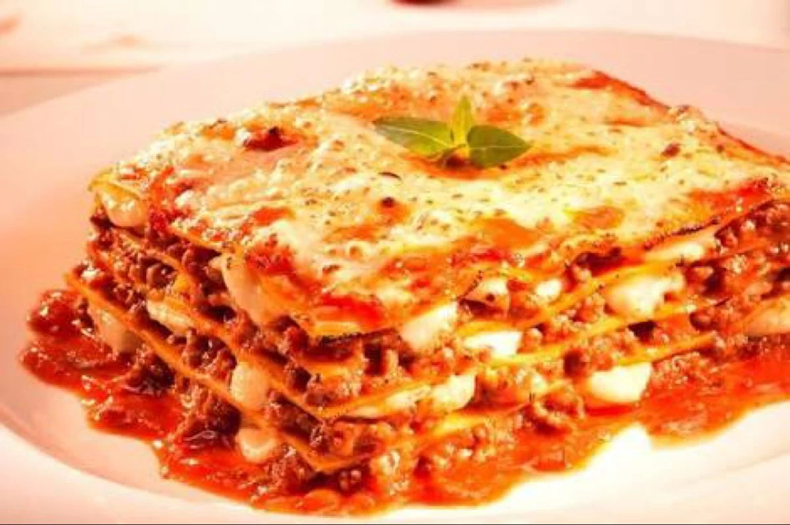

Lasanha Bolonhesa
INGREDIENTES
500 g de massa de lasanha
500 g de carne moída
2 caixas de creme de leite
3 colheres de manteiga
3 colheres de farinha de trigo
500 g de presunto
500 g de mussarela
sal a gosto
2 copos de leite
1 cebola ralada
3 colheres de óleo
1 caixa de molho de tomate
3 dentes de alho amassados
1 pacote de queijo ralado
INGREDIENTES
Coloque em uma panela com o fogo alto metade do óleo e a carne moída
Mexa de vez em quando
Vá apertando um pouco a carne com a ponta da espátula, para que ela fique bem soltinha
Deixe a carne fritar bem até que comece a pegar um pouquinho no fundo
Coloque a carne para os lados e abra um espaço no centro
Coloque o restante do óleo e acrescente o alho e a cebola e deixe fritar bem
Acrescente o sal, pimenta do reino, o cominho, o orégano, a polpa de tomate, o molho de tomate e a água
Reduza o fogo e tampe a panela deixe cozinhar por 10 minutos
